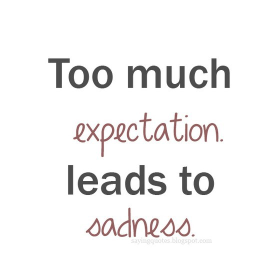
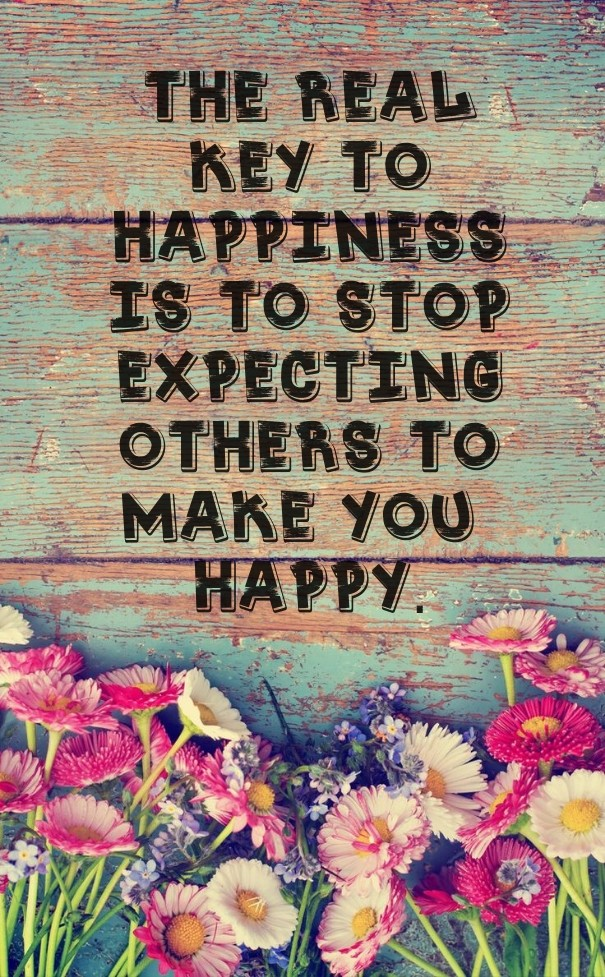

We put ourselves through unnecessary suffering when we have unreasonable expectations for others or constantly put them under a microscope. Of course, we all deserve basic things in relationships, like respect, but counting on anything other than that may leave you sorely disappointed. Remember that everyone is at a different place on their journey, so their words and actions will reflect that. If you want to have more successful, happier relationships with people, it’s important that you…
1. STOP EXPECTING THEM TO ALWAYS DO THE “RIGHT THING” BASED ON YOUR STANDARDS.
People’s morals and ethics differ based on a lot of factors, like their upbringing, culture, spiritual beliefs, etc. For example, in some Asian countries, dog is considered a delicacy, and they don’t feel wrong for eating animals we view as pets because it’s what they’ve been accustomed to. Or, let’s say you never swear, but your friend curses like a sailor. Does that make him or her wrong? Well, to some it does, but expecting them to do right in your eyes will always end in frustration, because right and wrong aren’t clearly defined. Just focus on adhering to your own morals, and let others live as they choose, as long as it doesn’t hurt you or the people you care about.
2. STOP EXPECTING THEM TO BE PERFECT.
If you view imperfections as perfect, then you won’t ever feel disappointed. However, a lot of people still give others a really hard time when they slip up, and it makes them feel like a letdown, plus it can seriously strain relationships. If anything, you should actually discourage others from becoming perfectionists, because this obsessive compulsion to have everything just right can lead to depression, anxiety, chronic diseases.3. STOP EXPECTING THEM TO AGREE WITH EVERY WORD YOU SAY.
Even the best of friends don’t agree on everything, so don’t get upset when people challenge what you say, or simply have a different opinion. The world would be quite boring if no one ever disagreed; our unique perspectives and beliefs allow the planet to keep evolving and moving toward better solutions. Think about what would happen if we all agreed with continuing to use fossil fuels to power our cars, houses, and just about everything in our lives…we wouldn’t have solar panels and electric cars if no one challenged the mainstream!4. STOP EXPECTING THEM TO READ YOUR MIND.
Some people have a more finely tuned intuition, but others just can’t read feelings or faces as well. Just because you might be more sensitive and understanding of how others feel doesn’t mean other people are on the same wavelength. Not everyone wants to become a psychic, so express yourself clearly so others don’t have to guess your thoughts all the time. Honest, open communication builds stronger relationships, too.5. STOP EXPECTING THEM TO PICK YOU UP EVERY TIME YOU FALL.
Of course, good friends and family will help you when you need it, but don’t count on them to brush the dirt off your shoulders every time. Maybe they have their own internal struggles and can’t carry the weight of both your problems and theirs at the moment, so try to understand their point of view. They want to help, but just can’t for the time being. That doesn’t mean they don’t care, it just means you have to channel your inner warrior and fight your own battles sometimes.6. STOP EXPECTING THEM TO UNDERSTAND YOU.
“Not everyone will understand your journey. That’s fine. It’s not theirs to make sense of – it’s yours.”
As long as you understand you, you won’t feel the need to gain acceptance from others. Then, the fact that they just don’t “get” you won’t really phase you anymore.7. STOP EXPECTING THEM TO TREAT YOU HOW YOU TREAT THEM.
Ideally, everyone would follow the golden rule, but we don’t live in a perfect world. Until everyone becomes more conscious, we will just have to accept that people will still treat us poorly because they lack a true relationship with themselves. View their attitude from a compassionate stance, and you won’t feel so hurt if people don’t treat you as kindly as you treat them.8. STOP EXPECTING THEM TO BE THE SAME PERSON THEY WERE A YEAR AGO.
People change over time based on their experiences and circumstances. Every day, people fight a tough battle that no one truly understands but them, so keep this in mind when you get the urge to judge them. Love everyone no matter what or who they’ve become, not just if they meet your ideals or standards.9. STOP EXPECTING THEM TO ALWAYS HAVE EVERYTHING TOGETHER.
Life throws everyone a curve ball from time to time, and it may take people longer than expected to make it up to the plate. Have compassion for others, and understand that everyone is just trying to do the best they can. Focus on bringing more value to the world and into your relationships, and don’t try to control or chastise others for how they handle their lives.10. STOP EXPECTING THEM TO GIVE YOU LOVE IF YOU DON’T FIRST OFFER IT TO YOURSELF.
All relationships start and end with you, so truly have to cultivate love within yourself first if you want it to make that full circle back to you. Using others to shower you with the love you refuse to give yourself will only lead to strained, insincere relationships. Developing a more loving attitude toward yourself, however, will bring about beautiful, thriving relationships.
“Don’t forget to fall in love with yourself first.” – Carrie Bradshaw